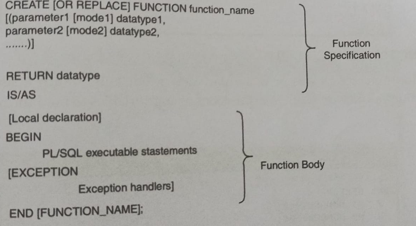

Creating a procedure
You can create a new function with the CREATE FUNCTION statement, which may declare a list of parameters, must return one value and must define the actions to be performed by the standard PL/SQL block .
SYNTAX

In the syntax:
1.OR REPLACE -This option indicates that if the function exists it will be dropped and replaced with the new version created by the statement
2.function_name - Name of the function.
3.parameter - Name of a PL/SQL variable whose value is passed to the function or populated by the calling environment. or both, depending on the mode being used.
4.mode - IN
OUT
INOUT
5.data type - Data type of the argument or parameter. It can be any SQL or PL/SQL data type. It can be of %TYPE, %ROWTYPE, or any scalar or composite data type.
6.RETURN datatype - Data type of the RETURN value that must be return by the function.
EXAMPLE
CREATE OR REPLACE FUNCTION F1(X NUMBER, Y NUMBER)
RETURN NUMBER IS
NUM NUMBER;
BEGIN
NUM:=X+Y;
RETURN (NUM);
END F1;